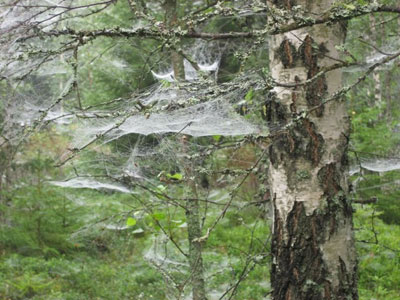

Gunilla Berglund
Gunilla Berglund - Bild för Hälsa
Åren 1971-2010 har jag varit verksam som socialarbetare inom fyra olika områden; kriminalvård, kommunal vuxenutbildning, öppenvård för kvinnor i aktivt missbruk samt på behandlingshem för män och kvinnor med missbruk och psykisk ohälsa. I mitt yrke har jag mött människor i utsatta livssituationer där fokus har legat på stödsamtal, psykosocial rådgivning och krisbearbetning. Jag kompletterade min socionomutbildning med magisterexamen i socialt behandlingsarbete i slutet av nittitalet samt med specialistutbildning i bildterapi vid Umeå Universitet 2001. Jag har sedan dess arbetat med bildterapi individuellt och i grupp kombinerat med psykosocialt behandlingsarbete.
Mitt förhållningssätt i behandlingsarbetet är att aktivt arbeta med ”friskfaktorer”, dvs stärkande och hälsofrämjande insatser, där bildterapi är en sådan. En utbildning till handledare i KASAM (Känsla av Sammanhang) gav en fördjupad kunskap som jag också använder i min roll som bildterapeut. Människor med god förmåga att uppleva tillvaron som begriplig, hanterbar och meningsfull får en känsla av sammanhang, vilket främjar hälsa. Bilden blir ett verktyg som kan bistå målaren i att begripa, hantera och finna meningsfullhet.
Jag erbjuder:
- Bildterapi individuellt och i grupp
- Handledning i bildterapi
- Psykosocial rådgivning med samtal och bild
- Workshops med olika teman – se Aktuellt sidan
Kontakt kgunillak@gmail.com
